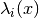
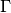
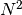
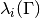

MatrixPotentialMS¶
About the MatrixPotentialMS class¶
The WaveBlocks Project
@author: R. Bourquin @copyright: Copyright (C) 2010, 2011, 2012, 2013, 2014 R. Bourquin @license: Modified BSD License
Inheritance diagram¶
Class documentation¶
- class WaveBlocksND.MatrixPotentialMS(expression, variables, **kwargs)¶
This class represents a matrix potential
 . The potential is
given as an analytic matrix expression. All methods use
pure numerical techniques because symbolical calculations are unfeasible
for 3 or more energy levels.
. The potential is
given as an analytic matrix expression. All methods use
pure numerical techniques because symbolical calculations are unfeasible
for 3 or more energy levels.- calculate_eigenvalues()¶
Calculate all the eigenvalues  of the potential
.
We can not do this by symbolic calculations, hence the function has an empty
implementation. We compute the eigenvalues by numerical techniques in the corresponding
evaluate_eigenvalues_at function.
- calculate_eigenvectors()¶
Calculate all the eigenvectors
 of the potential .
We can not do this by symbolic calculations, hence the function has an empty
implementation. We compute the eigenvectors by numerical techniques in the corresponding
evaluate_eigenvectors_at function.
of the potential .
We can not do this by symbolic calculations, hence the function has an empty
implementation. We compute the eigenvectors by numerical techniques in the corresponding
evaluate_eigenvectors_at function.
- calculate_exponential(factor=1)¶
Calculate the matrix exponential
 . In the case
of this class the matrix is of size thus the exponential
can not be calculated analytically for a general matrix. We use numerical
approximations to determine the matrix exponential. We just store
the prefactor
. In the case
of this class the matrix is of size thus the exponential
can not be calculated analytically for a general matrix. We use numerical
approximations to determine the matrix exponential. We just store
the prefactor  for use during numerical evaluation.
for use during numerical evaluation.Parameters: factor – The prefactor in the exponential.
- calculate_hessian()¶
Calculate the Hessian matrix
 of the potential’s
eigenvalues
of the potential’s
eigenvalues  with
with  . For potentials
which depend only one variable, this equals the second derivative and
. For potentials
which depend only one variable, this equals the second derivative and  .
Note that this function is idempotent.
.
Note that this function is idempotent.
- calculate_jacobian()¶
Calculate the Jacobian matrix
 of the potential’s
eigenvalues with . For potentials
which depend only one variable, this equals the first derivative and .
Note that this function is idempotent.
of the potential’s
eigenvalues with . For potentials
which depend only one variable, this equals the first derivative and .
Note that this function is idempotent.
- calculate_local_quadratic(diagonal_component=None)¶
Calculate the local quadratic approximation matrix
 of the potential’s
eigenvalues in . This function can be used for the homogeneous case
and takes into account the leading component .
If the parameter
of the potential’s
eigenvalues in . This function can be used for the homogeneous case
and takes into account the leading component .
If the parameter  is not given, calculate the local quadratic approximation
matrix of all the potential’s eigenvalues in . This case
can be used for the inhomogeneous case.
is not given, calculate the local quadratic approximation
matrix of all the potential’s eigenvalues in . This case
can be used for the inhomogeneous case.Parameters: diagonal_component – Dummy parameter which has no effect here.
- calculate_local_remainder(diagonal_component=None)¶
Calculate the non-quadratic remainder matrix of the quadratic approximation matrix
of the potential’s eigenvalue matrix
. In the homogeneous case the matrix is given by
where in the inhomogeneous case it
is given by .Parameters: diagonal_component (Integer or None (default)) – Specifies the index of the eigenvalue
that gets expanded into a Taylor series . If set to
None the inhomogeneous case is computed.
- evaluate_at(grid, entry=None, as_matrix=True)¶
Evaluate the potential
elementwise on a grid .Parameters: - grid (A Grid instance. (Numpy arrays are not directly supported yet.)) – The grid containing the nodes we want to evaluate the potential at.
- entry (A python tuple of two integers.) – The indices
 of the component
of the component  we want to evaluate or None to evaluate all entries.
we want to evaluate or None to evaluate all entries. - as_matrix – Dummy parameter which has no effect here.
Returns: A list containing  numpy ndarrays of shape .
- evaluate_eigenvalues_at(grid, entry=None, as_matrix=False, sorted=True)¶
Evaluate the eigenvalues elementwise on a grid .
Parameters: - grid (A Grid instance. (Numpy arrays are not directly supported yet.)) – The grid containing the nodes we want to evaluate the eigenvalues at.
- entry (A python tuple of two integers.) – The indices of the component
 we want to evaluate or None to evaluate all entries. If
then we evaluate the eigenvalue .
we want to evaluate or None to evaluate all entries. If
then we evaluate the eigenvalue . - as_matrix – Whether to include the off-diagonal zero entries of
in the return value.
Returns: A list containing the numpy ndarrays, all of shape .
- evaluate_eigenvectors_at(grid, sorted=True)¶
Evaluate the eigenvectors
elementwise on a grid .Parameters: grid (A Grid instance. (Numpy arrays are not directly supported yet.)) – The grid containing the nodes we want to evaluate the eigenvectors at. Returns: A list containing the  numpy ndarrays, all of shape
numpy ndarrays, all of shape  .
.
- evaluate_exponential_at(grid)¶
Evaluate the exponential of the potential matrix
on a grid .Parameters: grid (A Grid instance. (Numpy arrays are not directly supported yet.)) – The grid containing the nodes we want to evaluate the exponential at. Returns: The numerical approximation of the matrix exponential at the given grid nodes. A list contains the exponentials for all entries , each having
a shape of .
- evaluate_hessian_at(grid, component=None)¶
Evaluate the list of Hessian matrices at some grid nodes for one or all eigenvalues.
Parameters: - grid (A Grid instance. (Numpy arrays are not directly supported yet.)) – The grid nodes the Hessian gets evaluated at.
- component – The index of the eigenvalue .
Returns: The value of the potential’s Hessian at the given nodes. The result is an ndarray of shape is we evaluate at a single grid node or of shape if we evaluate at multiple nodes simultaneously.
- evaluate_jacobian_at(grid, component=None)¶
Evaluate the list of Jacobian matrices
 at some grid
nodes for one or all eigenvalues.
at some grid
nodes for one or all eigenvalues.Parameters: - grid (A Grid instance. (Numpy arrays are not directly supported yet.)) – The grid nodes the Jacobian gets evaluated at.
- component – The index of the eigenvalue .
Returns: The value of the potential’s Jacobian at the given nodes. The result is a list of ndarray each of shape is we evaluate at a single grid node or of shape
 if we evaluate at multiple nodes simultaneously.
if we evaluate at multiple nodes simultaneously.
- evaluate_local_quadratic_at(grid, diagonal_component=None)¶
Numerically evaluate the local quadratic approximation matrix
of
the potential’s eigenvalues in at the given grid nodes .Parameters: - grid (A Grid instance. (Numpy arrays are not directly supported yet.)) – The grid containing the nodes
 we want to
evaluate the quadratic approximation at.
we want to
evaluate the quadratic approximation at. - diagonal_component – Specifies the index of the eigenvalue
that gets expanded into a Taylor series .
Returns: A list of tuples or a single tuple. Each tuple contains the the evaluated eigenvalue , its Jacobian and its Hessian in this order.
- grid (A Grid instance. (Numpy arrays are not directly supported yet.)) – The grid containing the nodes
- evaluate_local_remainder_at(grid, position, diagonal_component=None, entry=None)¶
Numerically evaluate the non-quadratic remainder of the quadratic approximation
of the potential’s eigenvalue at the
given nodes .Warning: do not set the diagonal_component and the entry parameter both to None.Parameters: - grid – The grid nodes the remainder
 gets evaluated at.
gets evaluated at. - position – The point
 where the Taylor series is computed.
where the Taylor series is computed. - diagonal_component (Integer or None (default)) – Specifies the index of the eigenvalue
that gets expanded into a Taylor series and whose
remainder matrix
we evaluate. If set to None the inhomogeneous case given by
![W(x) = V(x) - \text{diag}([u_0,\ldots,u_{N-1}])](../_images/math/123058a5ffc3237e4febe609e31eb54ec1fcac6f.png) is computed.
is computed. - entry (A python tuple of two integers.) – The entry
 of the remainder matrix
that is evaluated.
of the remainder matrix
that is evaluated.
Returns: A list with ndarray elements or a single ndarray. Each containing the values of . Each array is of shape
 .
.- grid – The grid nodes the remainder
- get_dimension()¶
Return the dimension
 of the potential .
The dimension is equal to the number of free variables
of the potential .
The dimension is equal to the number of free variables  where .
where .
- get_number_components()¶
Return the number
of components the potential
supports. This is equivalent to the number of energy levels .